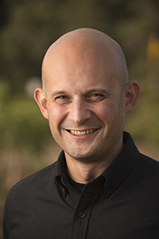
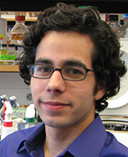
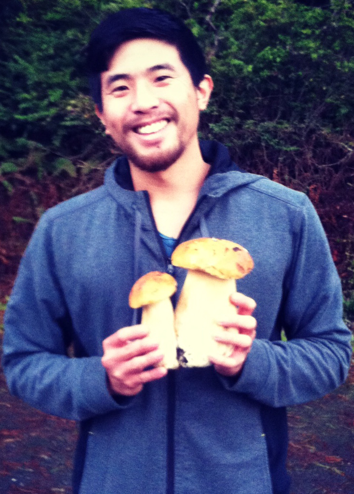
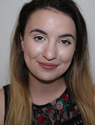
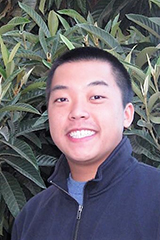

Current Cantu Lab members


Dario Cantù
Associate ProfessorLouis P. Martini Endowed Chair in Viticulture
Education
2009 PhD Plant Biology, UC Davis
2004 BS-MSc Agronomy, University of Milan (Italy)
Google Scholar Page
ImpactStory

Abraham Morales-Cruz
PhD Student (GGHA)Abraham is a PhD student in the Horticulture and Agronomy Graduate Group. He is interested in using genomics and bioinformatics to understand the interaction between plants and fungal pathogens. In the Cantu lab he studies the mechanisms of virulence underlying grapevine trunk diseases caused by fungal pathogens. Abraham received his B.S. in Biotechnology Engineering from the Instituto Tecnológico de Costa Rica in 2012. Before joining the Cantu lab in 2013, he worked at the Seed Biotechnology Center at UC Davis. At SBC he conducted research on pepper genomics, focusing on the discovery of genes associated with a major QTL of capsaicinoid biosynthesis. Abraham's Google Scholar Page

Jerry Lin
PhD Student (GGHA)Jerry is a Masters student in the Viticulture & Enology Graduate Group and a PhD student in Horticulture and Agronomy. He received his bachelor’s degrees in Genetics & Plant Biology and Molecular Toxicology at UC Berkeley. A lifelong love of plants and fungi led Jerry to pursue viticulture at UC Davis, where he joined the Cantu lab in the fall of 2015. At the Cantu lab, he is mapping viticulture and flavor traits in progenies obtained by crossing important wine grape cultivars.

Brianna Fochs
MSc Student (PBGG)Brianna is a graduate student in the Plant Biology Graduate Group. She earned her Bachelor's degree in Genetics from the University of Wisconsin. At the UW she studied the disease virulence of Ralastonia solanacearum on tobacco and tomato plants. This lead to her research interests in determining the role genetics has on plant-microbe interactions. Since joining the Cantu lab in spring of 2017, she has been investigating the induction of the anthocyanin pathway in white berries by Noble Rot infection.

Mélanie Massonnet
PostdocMélanie received her undergraduate bachelor's degree in Plant Physiology from the Université François Rabelais-Tours in France. After a first year of master degree in Plant biology and biotechnologies (Bordeaux, France), she earned a master degree in Enology, Viticulture and Wine producing at the Institut de la Vigne et du Vin (Bordeaux, France) where she conducted research on the functional characterization of O-methyltransferases involved in methoxypyrazines biosynthesis in Vitis vinifera in the lab of Pr. Serge Delrot. Then, she joined Pr. Mario Pezzotti’s lab (Università degli studi di Verona, Italy) where she obtained her PhD in applied biotechnologies, carrying out the berry transcriptome comparison of ten Italian grapevine varieties using RNA-Seq technology. In the Cantu lab, Mélanie investigates the interaction between grapevine and Neofusicoccum parvum, an aggressive trunk pathogen.

Andrea Minio
PostdocAndrea earned a master degree in Bioengineering at Università degli Studi di Padova (Italy) under the supervision of prof. Di Camillo studying the topological properties of gene co-regulatory networks reconstructed by reverse egineering expression profiles. In Prof. Massimo Delledonne's lab he received his Ph.D in Applied Biotechnologies at Università di Verona (Italy) focusing on de novo reconstruction and annotation of genomes and transcriptomes. As bioinformatician in the Cantu Lab, Andrea applies computational methods to sequencing data with the purpose of uncover complex genomic characteristics and lifestyle of grapevine cultivar, fungal phytopathogens and other non model species.

Amanda Vondras
PostdocAmanda received a BS in Biology from Cornell University in 2011 and PhD in Molecular and Cellular Biology from Oregon State University in 2017. As an undergraduate student, she pursued the functional characterization of an enzyme suspected to be involved in norisoprenoid biosynthesis. Her doctoral work included studying uneven berry ripening and the effects of grape leafroll-associated virus 3 on ripening. As a postdoc in the Cantu Lab, she will delve more deeply into this plant-pathogen relationship by exploring how combinations of viral infections influence the severity of symptoms during ripening and alter plant defense responses.

Rosa Figueroa-Balderas
Senior Research ScientistRosa Figueroa-Balderas completed her M.S. and Ph.D. in Biochemical Sciences at the Institute of Biotechnology in the National University of Mexico (IBT-UNAM). In 2007, she was awarded a UCMexus-Conacyt postdoctoral fellowship where she developed marker-free transformation technologies to genetically improve California relevant crops at PIPRA/UC Davis. Throughout her postdoctoral training at UC Davis, Rosa designed and built complex plant transformation vectors with maximum freedom-to-operate with the aim of generating marker-free plants. She has collaborated with several Ag-companies designing plant transformation vectors and developing molecular characterization of thousands of independent transformation events with pre-commercial purposes. Rosa has been working in Cantu’s lab since December, 2014 primarily on the development, optimization and implementation of molecular biology protocols for grapevine genomic studies related to grape genetic resistance to Pierce’s disease, powdery mildew and Neofusicoccum parvum, as well as in grape whole genome projects. Rosa's Google Scholar Page

Eric Tran
Junior SpecialistEric received his BS in Microbiology from the University of California, Davis, in 2015. As an undergraduate student, he interned in the laboratory of Dr. David Gilchrist where he conducted research in the development of transformation vectors for Pierce’s Disease resistance in Vitis Vinifera cultivars. After graduation, Eric worked for an analytical laboratory in Napa County where he conducted molecular microbiology diagnostics on wine and grape berries. He also worked for two large agricultural companies where he was involved in molecular-breeding and plant pathology projects related to improving vegetable crop genetic resistance against plant diseases. In the Cantu lab, Eric will assist members of the lab in research on the genetics and molecular biology of grapevine responses to microbial pathogens, as well as research related to grape genomics.
Ayca Ozcan
MSc Student (VENGG)Ayca is a Masters student in Viticulture and Enology Group. After receiving her bachelor’s degree in Food Engineering at Middle East Technical University Turkey, her interest of studying yeast metabolism brought her to UC-Davis. She has started working in Block Lab group as a junior specialist on analyzing the nutrient utilization efficiency of commercial yeast strains during fermentation, collaborating with Cantu Lab for the transcriptomics aspect of the project led her to lean more towards studying identification of genes differentially expressed in different yeast strains for her masters with the co-advising of Dr. Block and Dr. Cantu.